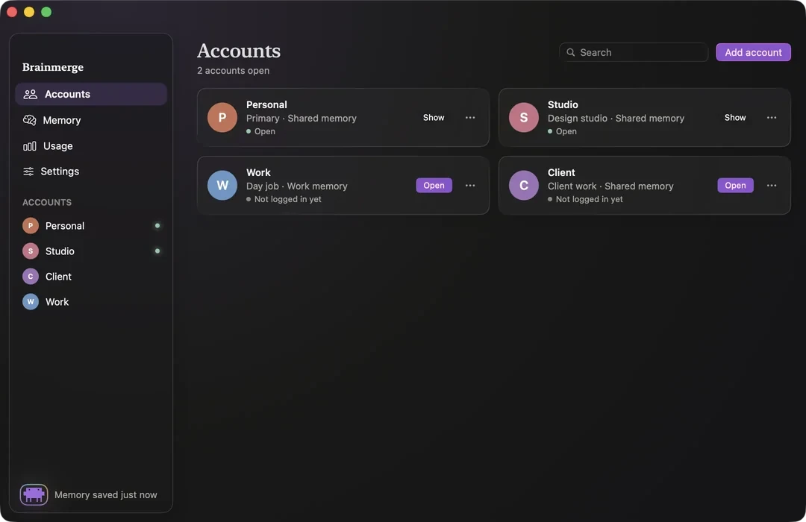
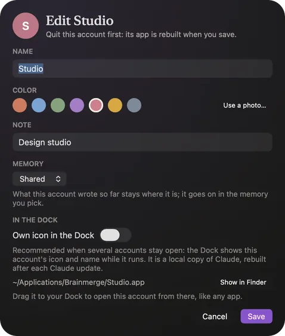
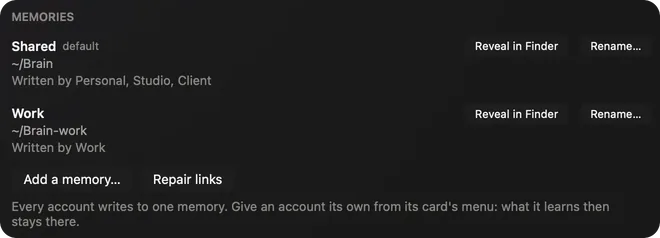
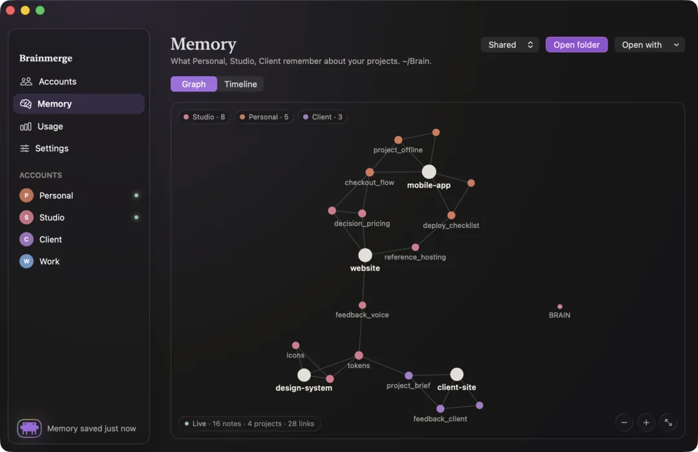
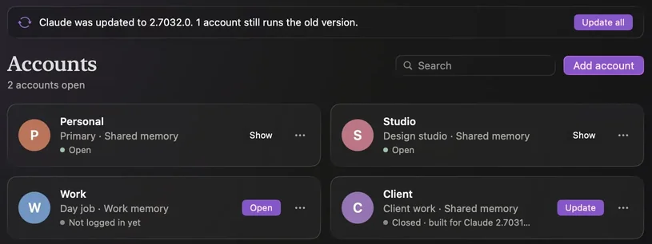
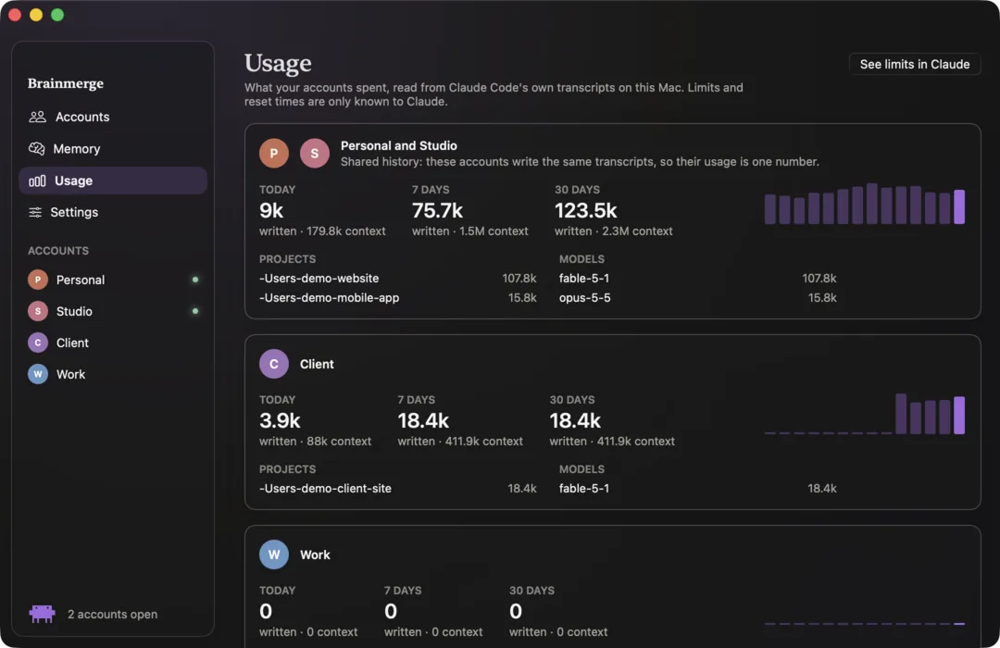
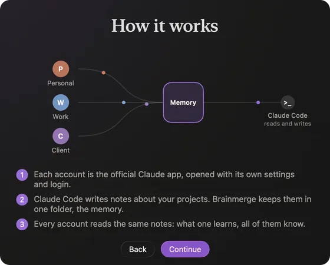
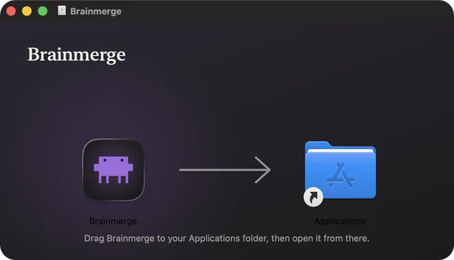

Brainmerge
Every Claude account,
side by side.
A free Mac app that opens each of your Claude accounts in its own window of the official Claude app, and gives them one memory of your projects, or one each.
Version 0.5.0 macOS 26 or later Free and open source
Works with Claude. Not made by Anthropic.

One account for you, one for work. Maybe one for a client.
The Claude app knows one account at a time.
So the day goes: log out, log in, log out again. Or a folder of hand-made scripts. And what Claude learns about your projects in one account is lost to the other.
Brainmerge keeps them all open at once, and lets them share one memory.
Accounts
Every account, in its own window.
Each of your Claude accounts opens in its own window of the official Claude app. You log in once, and it stays logged in. No more logging out to switch.
Up to 50 accounts, side by side.
Each account is an app of its own.
~/Applications/Brainmerge
Every account gets its own small app, with its name and its color or photo. Open it from the Dock, from Launchpad or from Brainmerge, like any other app.
Optional: its own icon in the Dock while it runs. It is a local, tinted copy of Claude, made on your Mac and rebuilt after each Claude update.
Your first account is Claude itself, which Brainmerge never changes. Switch on its own app to keep one in its color in the Dock, in place of Claude.
Edit everything in one place.
- Name
- Color or photo
- A note: Personal, Work, a client
- Its memory
- Its Dock icon

Memory
One memory. Or one each.
By default, all your accounts share one memory of your projects: a folder of plain Markdown notes in ~/Brain, or in a folder you already have. An Obsidian vault works well. What Claude Code learns about a project in one account, the others know too.

Give any account a memory of its own in one click, and work or client things stay apart.
Every account writes to exactly one memory. Switching never moves or deletes a note.
Open it in Finder, Obsidian, Logseq, iA Writer, Typora, VS Code, Cursor, Zed, or any other app.
No notes app yet? Brainmerge suggests free ones.
See what every account remembers.
The Memory screen opens on a live graph of your notes. It only reads the folder, and nothing leaves your Mac.

- Bubbles and threads
- Each note is a bubble in the color of the account that last saved it. Each project is a larger cream bubble with its notes around it, and the threads are the links between notes.
- Pulses
- A note pulses while Claude Code writes it, and again, in the account’s color, when that account saves it.
- Hover, click
- Hover a bubble to light it and its neighbors. Click it to read it. Double-click to open it in your notes app.
Prefer words? One click away, the timeline tells it in sentences.
-
Studio remembered something about website.
-
Personal updated 2 notes about mobile-app.
-
Client updated its notes about client-site.
Each memory is a git repository. Each account signs only what it wrote, and your own edits are saved as You.
Connected, or not yet. Always up to date.

Each card says whether its account has logged in. In the guided setup, the step turns to “Connected” on its own once you have. Brainmerge only looks at the names of Claude’s own storage files, never at what is inside.
When Claude updates itself, the accounts that keep their own copy of it are flagged, then updated in one click, or on their own. The version is checked every few minutes, and whenever the Brainmerge window comes to the front.
Usage
What each account spent.
Read from Claude Code’s own transcripts on your Mac: today, seven days and thirty days, by project and by model.

Eight gigabytes of transcripts, read in under twenty seconds with about seventy megabytes of RAM. The next read takes under a second.
Informative only: Brainmerge never switches accounts for you and never reads limits by itself. When you click “Check limits”, it asks that account’s own Claude Code, the same as typing /usage. It also shows how much RAM each open Claude window uses, with a quiet warning when your Mac runs low.
A guided setup. No terminal.
Six short steps, all inside the app. On a Mac without git, one step first offers Apple’s free Command Line Tools.
- What Brainmerge is for.
- How it works, in an animated diagram.
- Where the memory lives, and which app opens it.
- Your current Claude becomes your first account.
- An optional second account, with shared memory or its own. The login is guided.
- A checklist of what is ready.

For those who want one, the brainmerge command sets up accounts and memories, checks them and reads usage from a terminal. It is never required.
Safety
Safe for
your accounts,
by design.
Of Anthropic's software, Brainmerge only starts the official Claude app and the official Claude Code you already have. On your click it can also start Apple's own installer for its Command Line Tools, or your browser in the profile you picked. Each account logs in by itself, inside Claude.
Read SECURITY.md-
No passwords, tokens or cookies.
Brainmerge never reads, stores or sends a password, a token or a cookie. There is no code path for it. To tell your accounts apart, it only shows the email Claude Code records for each one, and stores it nowhere.
-
No switching, no rotation.
No account switching, no pooled usage, no automation of the login.
-
No network calls of its own.
No server, no account of ours, no telemetry. “Check for updates” opens the releases page in your browser, “Check limits” asks your own Claude Code, and Connections opens your browser in the profile you picked, only when you click.
-
Claude stays as it is.
Claude itself is not modified. The optional Dock icon is a local copy, made after checking that Claude’s signature is intact, and it is never distributed.
-
Promises that are tested.
Tests scan the source code at every run to keep these promises true. SECURITY.md lists exactly what the app touches on your Mac.
-
Leaves cleanly.
Remove Brainmerge from Settings: its hooks, account apps, command-line link and settings go. Each project keeps a copy of its notes. Your memories and logins stay.
One account is one person. Brainmerge keeps several of yours tidy, nothing more.
Free and open source.
A native Mac app, written in Swift and SwiftUI and released under the MIT license. Every line, including the tests behind the promises above, is on GitHub.
Get Brainmerge.
Signed with a Developer ID and notarized by Apple: the first time, macOS only asks you to confirm opening an app downloaded from the internet.
Version 0.5.0 macOS 26 or later
Requires the Claude app

Open the disk image and drag Brainmerge to Applications. Opened from anywhere else, it offers to move itself there.
The first time each new account opens, macOS asks to allow “Claude Safe Storage” (choose Always Allow), and may ask for access to Documents (choose Allow). That is Claude’s normal first launch.